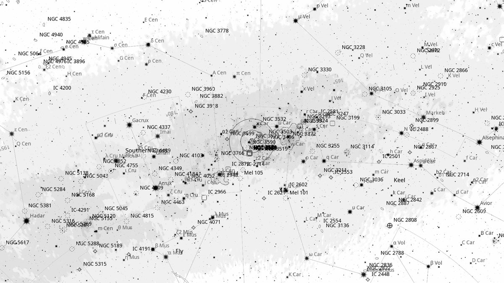
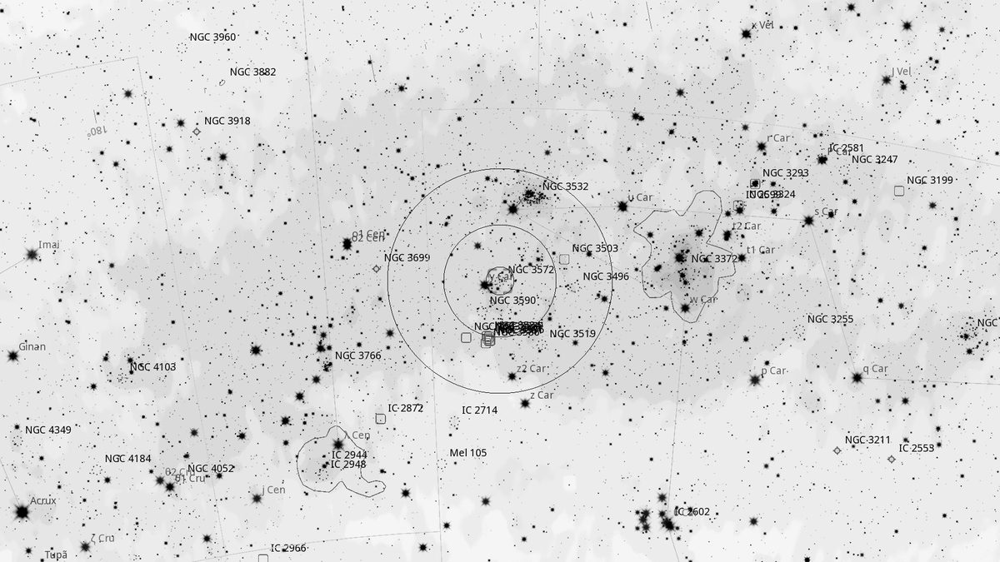
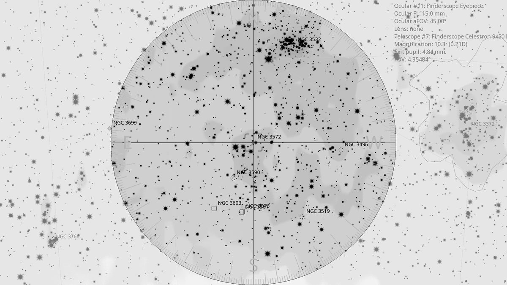
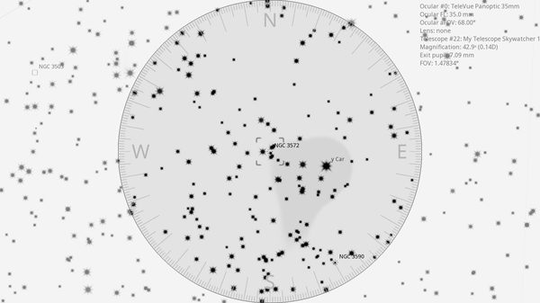

NGC 3572 (OC)
| R.A. | Dec. | Size | Mag | SB | Cnt.St | Type | Distance | Chart |
|---|---|---|---|---|---|---|---|---|
| 11h 10m 24.7s | -60° 15′ 08.8″ | 6.0′ | 6.6 | 10.2 | I2m | OC | -- | -- |

Background
NGC 3572 is a young open cluster ( 3 Myr) of around 80 stars, embedded in the extensive Carina OB1 stellar association. The cluster sits within the same spiral arm as the Carina Nebula and is one of several young clusters in this crowded star-forming region.
My Observing Notes
30-cm (SkyWatcher 12-inch f/5): Drift south of NGC 3532 and a bright clump of stars stands out. In the 35 mm Panoptic, NGC 3572 and its neighbour NGC 3590 share the field with another collection of stars between them, giving the impression of three interacting clusters. It is genuinely hard to tell where one cluster ends and the next begins. Two bright patches of nebulosity (NGC 3579/3603) are also visible in the same field of view.(10 April 2026)
References
Charts



